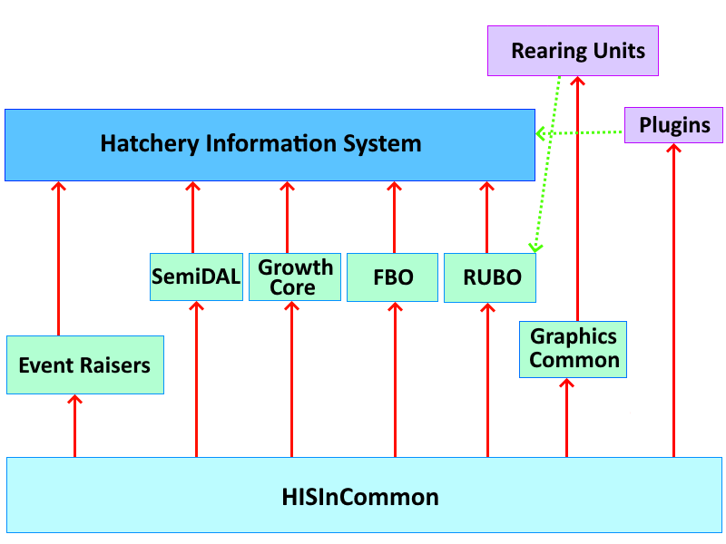

Hatchery Information System
The biggest issue with hatchery data management systems tends to be the size and complexity of the problem. Hatchery Information System can’t avoid that problem entirely, but it is designed to minimize the problem. This is accomplished by breaking the program into a series of pieces, each of which are as independent of one another as possible. There is nothing very unusual about a program consisting of different pieces, but hatchery data lends itself to a greater than average degree of separation and isolation. For this reason, the models in Hatchery Information System can be thought of as a series of independent programs that share a small amount of common language. This separation doesn’t reduce the total size and complexity, but does mean that the program doesn’t need to be considered as a whole at all times. In fact, the separation is sufficient that most of the models could be gainfully employed outside of the Hatchery Information System program.
Everything in Hatchery Information System references the HISInCommon.dll. The dll primarily consists of a series of interfaces that form the common language underpinning every part of the HIS project. In addition to the interfaces, the common dll defines a series of Enums that give meaning to what would otherwise be magic numbers throughout the different parts of the project.
In addition to the common definitions, there are also a few functions that I thought were sufficiently likely to be useful to different parts of the project that it made sense to provide them for use by any who wanted them. For a function to be included in the common dll, it had to be something that would have widespread utility and not have a variety of possible interpretations and implementations. As a result of this, the common functions tend to be both trivial and obvious. For example, there are some simple conversions that are specific to fish hatchery data, such as Fish Per Pound to Grams Per Fish and vice versa as well as some methods that can be used to standardize the display of units. There is no need to use any of these, as they are all pretty trivial, but using them will result in a more consistent interface from the user perspective.
Finally, there are a few classes and objects in the dll that have a certain universal utility across the project. Most of these are specialized overloads of EventArgs, the base class for all event arguments used throughout the .NET ecosystem. These are used by the Event Raisers to provide consistent information when communicating between models. The other classes can largely be ignored by the user, as they deal with some internal plumbing that isn’t exposed directly outside of the main models.
The Event Raiser classes are the glue that binds the Hatchery Information System together. There are two event raiser classes, the Event Raiser itself, which is used throughout the project, and the Web View Information, which is used solely for plugins that work with the Move Web View display. The two classes are similar in that they expose the model functionality to all who need it, as well as facilitating and moderating any communication between models such that the parts of the project don’t need to know anything about one another. The main program creates a single instance of each of these two classes, and then passes the interfaces of the classes around to every other model and plugin used by the system as those objects are created.
The primary responsibility of both of the Event Raiser classes is to raise events at the behest of other modules. These events act as messages broadcast for any that are listening. Any module can raise any of the events from either of the Event Raiser classes, and all modules can handle any events as needed. By using this form of broadcast event communication, there is no need for any one model or plugin to know of the existence of any other. The one can broadcast a message whether anybody is listening or not, while the receiver can listen for any broadcasts that are of interest to it without knowing whether anybody will broadcast, or whether any others even exist.
In addition to the events, the Event Raiser classes expose a few other objects to the different parts of the program. Most significantly, the interfaces for all the models that make up the core of the program are properties of the Event Raiser classes. This allows all modules to get access to the public portions of the models without needing to reference the models directly. By doing this, every plugin and model can make use of the functionality of the other models without knowing how other models are implemented. In theory, entirely different models could be swapped in without disturbing the functioning of the other parts of the project.
The Graphics Base used to be a part of the Common dll. This was not an ideal organization, as it tied the entire program, including those parts that had no graphical component, to a single graphics technology. By moving the objects that make up the Graphics Base out of the Common Base, it becomes easier to replace one type of graphics technology with another, though in practice such a replacement is unlikely to be all that easy, since so much of the display is graphical, and therefore tied to the graphics technology used to some extent.
The graphics technology used by Hatchery Information System has evolved over time. Originally, all graphics on the main display were rendered using GDI. Once every spare cycle had been wrung out of that CPU-based technology, some actions of the program were found to be unacceptably slow. Therefore, the main views were switched to use the GPU-based XNA. Microsoft then abandoned XNA, but it was taken up and extended by the MonoGame project, so Hatchery Information System switched to using MonoGame, which is based on XNA and DirectX. The Graphics Base Class and any plugins implementing rearing units have to have access to the MonoGame dlls, but since the Graphics Base Class references the dlls, none of the rearing unit plugins have to do anything extra. Also, with the Graphics Base Class referencing the MonoGame dlls, no other part of the program is at all dependent on MonoGame.
There are five models that make up the Hatchery Information System. The main program creates a single instance of each of the models, then passes them to the Event Raiser object, which exposes the interfaces implemented by the models. The interfaces are all defined in the Common Base dll, so while the models are not known to all, the interfaces are. By arranging things in this fashion, all parts of the program can make use of the models without knowing anything about them. This includes the models themselves, which know nothing of one another, though they can make use of each other as needed. All of the models makes at least a little use of the SemiDAL object, as that is where they get connection information and register database table information.
The first model is the Rearing Unit Business Object, which manages all the rearing units and their layout on the screen. This model makes no use of any of the other models other than some aspects of SemiDAL, as noted earlier. The Rearing Unit Business Object is responsible for loading all rearing unit plugins. Due to the specialized nature of this model, it is unlikely to have any utility outside of the Hatchery Information System project, but could be entirely independent of the project.
The second model is the Fish Business Object, which manages how fish and fish traits move through the system. This model makes only trivial use of the Rearing Unit Business Object, as it is convenient for it to build useful names based on the rearing units the fish are found in. The nature of the Move Web design, on which the Fish Business Object is built, is such that it could be useful in a wide range of scenarios outside of the Hatchery Information System project.
The third model is the Growth Core, which manages how fish grow over time. This model makes fairly extensive use of the Fish Business Object, though it makes little use of the Rearing Unit Business Object. Due to the dependency on the Fish Business Object, the Growth Core model makes little sense outside the context of the Hatchery Information System project. Plugins for the Growth Core can implement custom growth curves based on whatever parameters the plugin chooses.
The fourth model is the Communication Manager. The purpose of this model is to set up a small peer-to-peer network using UDP to communicate between different computers within the same LAN. This allows the Hatchery Information System to be installed on several different computers, which can then alert each other to update the screen as needed, as well as to automatically hand off responsibilities as needed. There is no relationship between this model and any other model in the Hatchery Information System project.
The fifth model is the aspirational Semi DAL. A true DAL isn’t possible for a plugin-based program, as it isn’t possible to force plugins to make use of the features of the DAL without greatly restricting the versatility of the program. Still, the Semi DAL does offer up features that the plugins can use to make some tasks easier, and other tasks possible. The SemiDAL is also responsible for tracking information about the database itself, as well as managing connection strings to the database. This is the one model that doesn’t really have a place outside the Hatchery Information System project, as it is far too intimately tied to the project design.
The Rearing Unit Business Object model, the Fish Business Object Model, and the Growth Core model each implement two different interfaces. The first interface is the Read Only interface, which exposes the information from the model without being able to add to or alter the information in the model. This interface makes it possible to create a different program based on the same models which can be used solely for viewing data, generating reports, and so forth. The second interface is the Manipulations interface, which is used in the HIS program and offers up all the means to add to, and alter, the models. The Rearing Unit Business Object has a further interface called the Lock and Key interface, which is only used within that model, and is mentioned here only because the interface is found in the Common dll.
In addition to the five models, there is a model that is part plugin, part built-in. This model is the Fish Marking Business Object. In fish hatcheries, marking holds an interesting place. Many hatcheries don’t mark fish at all, while others mark all the fish in the hatchery, and a third group mark only part of the fish in the hatchery, or even just some of the fish in a rearing unit. The marks used by those hatcheries that do mark fish are both changeable and diverse. Different hatchery systems use different marks for different purposes, and these are likely to change over time. Because of this diversity of activities and marks, it is impossible to come up with a fish marking system that will work for all users at all times. The HIS project addresses this by creating an interface that can be used by virtually any fish marking system to get some information about marks on fish. It is then up to the different systems to come up with a plugin that implements the interface and offers it up to the rest of the program.
The way the Fish Marking Business Object is implemented is that, when the program starts up, it asks for an implementation of the interface for the Fish Marking Business Object (IFMBO). If any plugin has implemented the interface, then it can supply the object, which is then made available from the Event Raiser object. If no plugin implements the interface, then the default object is used. The default object doesn’t really do anything useful, as it calls all fish unmarked.
By arranging the object in this fashion, it is possible to make all of fish marking a plugin, which means that all users are free to use their own fish marking implementation. If no marking is needed at all, then the default is used.
This can be considered a sixth model, as the IFMBO interface is exposed by the Event Raiser objects, so all parts of the program can use it, regardless of whether it is just the default implementation or something customized to the hatchery operation in question.
All other functionality of the Hatchery Information System is supplied by plugins. Plugins are generally small dlls that reference the Common Base and are given a reference to the Event Raiser object upon initialization. If the plugin is a rearing unit plugin, then it will also reference the Graphics Base. If the plugin is used in the Move Web View, then it will hold a reference to the Web View Information object in addition to the Event Raiser object.
The ability of plugins to communicate between one another is limited by design. They can raise events using the Event Raiser object, but are under no obligation to do so. Everybody who writes a plugin has to decide how much communication they want to perform. Broadcasting a message that nobody cares about has so little cost that it is virtually free, but there is always a limit as to what is worth broadcasting. Every plugin that needs to know about the data from others will have to decide how to get that data. Quite often, the data will either be a Trait or Metric, and will therefore be available from either the Fish Business Object (for Traits) or from the Event Raiser object (for Metrics). Alternatively, the plugin might raise an event containing the information. Failing that, the plugin might simply write to the database, which the consumer can then read as needed.
The utility of some plugins may be completely dependent on the existence of some other plugin. The order in which plugins get loaded can be set for any installation of the Hatchery Information System, to ensure that a plugin gets loaded after its dependencies. Additionally, it is often possible for a plugin to ascertain whether or not certain other plugins exist. This is mostly useful for certain exotic implementations of the IAPI interface.
Therefore, each plugin is dependent solely on the Common dll, or the Common and the Graphics Common in the case of rearing unit plugins. Plugins are independent of one another, and largely independent of the models. There are few, if any, other limits as to what functionality plugins can implement. They are essentially mini programs that run in the environment of the Hatchery Information System models.